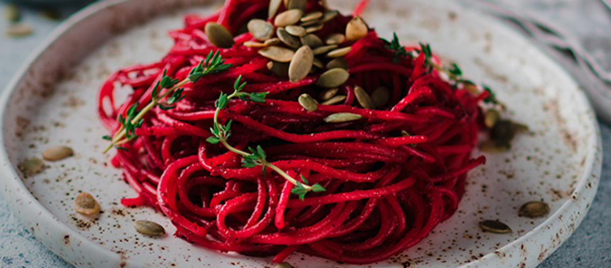
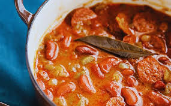

|
receitas com a beterraba macarrão roxo:Ingredientes 2 beterrabas Azeite a gosto Sal a gosto Pimenta-do-reino moída na hora a gosto 250 g de macarrão espaguete 1 dente de alho descascado Ricota esfarelada a gosto Cebolinha a gosto Modo de preparo Descasque e corte a beterraba em cubos. Regue com azeite e tempere com sal e pimenta. Deixe todas as beterrabas bem próximas. Asse em forno pré-aquecido a 200 graus por 30 minutos. Em outra panela, cozinhe o macarrão. Quando estiver al dente escorra e reserve a água do cozimento. Bata as beterrabas no liquidificador. Adicione o alho, o azeite, o sal e ½ xícara da água de cozimento do macarrão. Bata até obter um creme bem liso. Coloque o macarrão em uma tigela e adicione o molho por cima. Finalize com ricota, cebolinha, azeite e pimenta. |
 |
|
️ risoto de beterraba: Ingredientes: 1 colher (de sopa) de azeite3 colheres (de sopa) de manteiga3 dentes de alho picados500 ml de caldo de legumes2 xícaras de arroz arbóreo1 beterraba raladaBeterraba em pó a gosto1 xícara de cachaça1/2
xícara de parmesão raladoSal a gostoPimenta-do-reino a gosto1 fatia de limão siciliano grelhado para decorarBroto de couve a gosto para decorarParmesão ralado para decorarModo de preparoEm uma panela, coloque um fio de azeite e
a manteiga e refogue o alho até dourar levemente.Enquanto isso, aqueça o caldo de legumes separadamente.Adicione o arroz, a beterraba ralada e a em pó e refogue mais um pouco.
Inclua a cachaça e continue cozinhando e mexendo até evaporar.Adicione aos poucos o caldo de legumes ao arroz, e vá mexendo sem parar.Continue escaldando o arroz e mexendo até que ele fique al dente.Adicione o parmesão ralado, acerte o sal e tempere com
pimenta-do-reino.Sirva no prato e decore com a fatia de limão siciliano grelhada, os brotos de couve e o parmesão ralado. |

|
|
receitas com a beterraba feijão com beterraba: Ingredientes 2 xícaras de chá de feijão vermelho 8 xícaras de chá de água 1 folha de louro 1 linguiça calabresa 1 beterraba 1 colher de sopa de banha de porco 1 cebola 4 dentes de alho Sal a gosto Publicidade Modo de Preparo Em uma panela de pressão, coloque o feijão, a água quente, a folha de louro, a linguiça, a beterraba e tampe. Leve para cozinhar em fogo baixo e assim que pegar pressão, cozinhe por meia hora. Espere sair a pressão e destampe a panela. Em uma frigideira, coloque a banha de porco, o alho, a cebola e frite bem. Despeje essa mistura no feijão, adicione o sal e coloque para cozinhar na pressão por mais cinco minutos. Agora é só servir! Bom apetite. |
 |
Composicao Nutricional (100g)
Tabela Nutricional da Beterraba (100g)
| Nutriente | Quantidade |
|---|---|
| Calorias | 43 kcal |
| Carboidratos | 9,6 g |
| Proteínas | 1,6 g |
| Fibras | 2,8 g |
| Vitamina C | 4,9 mg |
| Ferro | 0,8 mg |
| Potássio | 325 mg |
Bibliografias:
tuasaude.com
brasilescola.uol
totalpass.com
⬆️
Pedro Henrique Siqueira de Souza 2026 - ©Todos os direitos reservados